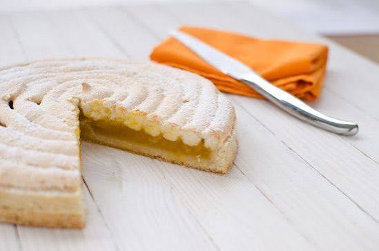

Fénétra
Toulousaine


⟹ Pâtisserie Traditionnelle ⟸
Le fénétra est souvent présenté comme le plus ancien gâteau de Toulouse. Cette tarte associe une pâte sablée, une couche de confiture d'abricot, des écorces de citron confit hachées et une garniture légère et croustillante à base d'amandes et de blancs d'œufs, proche d'une dacquoise ou d'une pâte à macaron. Le tout est saupoudré de sucre à la sortie du four.

Son nom renvoie, selon la tradition toulousaine, aux Feretralia, une fête des morts d'époque romaine célébrée au début du printemps. Les Toulousains se rendaient alors sur les tombes de leurs proches avant de partager un repas : le gâteau serait né de ces commémorations. Comme souvent pour les recettes anciennes, cette origine antique relève en partie de la légende, mais elle explique le lien étroit entre le fénétra et le souvenir des défunts.
Au fil des siècles, la fête perd son caractère funèbre et devient une grande fête populaire. Promenades, jeux, musique et repas en plein air animent les quartiers ; le fénétra s'invite dans les repas de famille du dimanche et devient le dessert attendu de ces réjouissances. Le XVIIIe siècle passe pour la période où la fête prend son tour le plus festif.
La tradition s'éteint presque complètement après la Première Guerre mondiale. Le gâteau tombe dans l'oubli, survivant seulement dans quelques familles et dans de rares pâtisseries attachées aux recettes anciennes.
Le renouveau vient de la culture occitane. À partir des années 1960, une nouvelle fête reprend le nom : le Grand Fénétra, festival de musiques et de danses traditionnelles occitanes organisé chaque été à Toulouse. Le gâteau y retrouve naturellement sa place, et quelques pâtissiers toulousains le remettent en vitrine pour l'occasion, puis toute l'année.
Le mariage de l'abricot et du citron confit donne au fénétra son caractère : l'acidité fruitée de la confiture répond à l'amertume parfumée des écorces, tandis que la garniture aux amandes apporte moelleux et croquant. C'est un gâteau de garde, qui se conserve plusieurs jours et gagne même en saveur le lendemain.
Paradoxalement, le fénétra est aujourd'hui souvent mieux connu des visiteurs que des Toulousains eux-mêmes, grâce aux guides touristiques qui le citent parmi les spécialités de la ville. Il reste pourtant l'une des rares pâtisseries françaises directement liées à une ville et à une fête, et incarne un patrimoine gourmand que pâtissiers et passionnés de culture occitane s'attachent à faire revivre.
Fénétra individuel : petites tartelettes reprenant la recette, proposées à l'unité par certaines pâtisseries toulousaines.
Version au cédrat : certaines recettes anciennes remplacent le citron confit par des écorces de cédrat, plus parfumées.
Fénétra revisité : des pâtissiers créent des entremets ou des tartes contemporaines inspirés de son trio amande-abricot-citron.
Le fénétra se trouve surtout à Toulouse, dans quelques maisons attachées aux recettes traditionnelles.
Les pâtisseries du centre historique où quelques maisons de tradition familiale, notamment près de la cathédrale Saint-Étienne, le vendent entier ou à la part.
Le Grand Fénétra festival estival de musiques et de danses occitanes, occasion de retrouver le gâteau dans son contexte festif.
Le marché Victor Hugo où certains artisans et épiceries fines le proposent aux côtés des autres spécialités toulousaines.